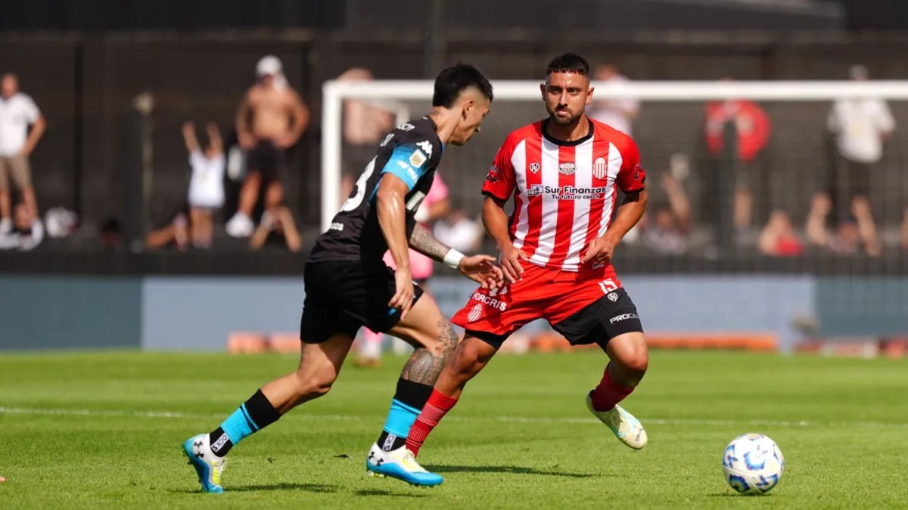

EL BLOG DE RACING

Gabriel Arias (6): Casi no tuvo trabajo en la tarde de hoy, estuvo siempre atento.
Nazareno Colombo (5): Abusó de las faltas cerca del área, pero en general cumplió.
Santiago Sosa (6): Siempre bien posicionado y clave para salir jugando desde el fondo. Buena distribución.
Agustín García Basso (6,5): Sólido y sin complicaciones en defensa. Buenos cruces y anticipos.
Gastón Martirena (5): Partido discreto, buen despliegue por las bandas. No estuvo muy participativo en ataque.
Juan Nardoni (6,5): Buen encuentro, sólido en el mediocampo marcando con firmeza y distribuyendo la pelota.
Agustín Almendra (7): Movió bien la pelota y se juntó de gran manera con los volantes y delanteros. Abrió el partido con un gran derechazo y salió por precaución en el inicio del complemento.
Gabriel Rojas (7): Tuvo un buen despliegue por izquierda, se proyectó con criterio y no tuvo demasiados problemas en la marca. Participó en la jugada del tanto de Maravilla.
Santiago Solari (6): Redondeó un buen partido por las bandas, se conectó bien con los volantes y delanteros. Marcó un tanto anulado polémicamente por offside.
Adrián Martínez (8): Gran partido del 9, luchó durante toda la tarde con los centrales y marcó tras un rebote del arquero. Pivoteó bien y trató de descargar siempre al pie. Tuvo su segundo tanto con un cabezazo que pasó cerca.
Maximiliano Salas (7,5): Gran partido, incansable, molestando en cada salida del rival. No tuvo grandes chances de anotar pero se lo vio muy movedizo y participativo.
Ingresaron en Racing
Bruno Zuculini (6): Colaboró en la presión en el medio para no dejar a los mediocampistas. Tuvo un buen remate que despejó el arquero.
Johan Carbonero (-): No tuvo mucha participación en ataque pero mostró una buena actitud.
Santiago Quiros (-): Se paró como lateral izquierdo y cubrió bien la zona.
Martín Barrios (-): Pocos minutos de juego.
Germán Conti (-): Pocos minutos de juego.
Gustavo Costas (8): Puso el mejor equipo posible salvo Di Cesare y Juanfer, para administrar las cargas de cara a la final. Se vio un equipo compacto, comprometido, y que nunca sufrió ante un débil rival.